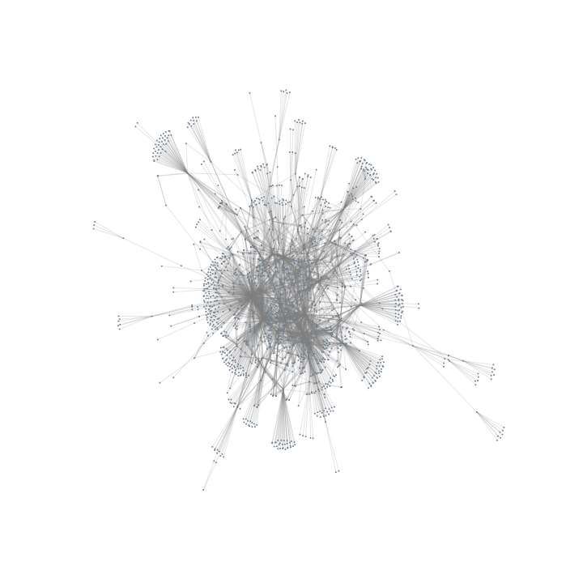
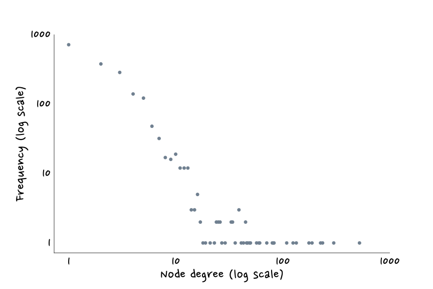

What is a complex network?
The phenomena we have just decribed are examples of complex systems. They are composed of many simple units, interacting in such a way that an emergent behaviour appears that can not be deduced from the behaviour of the units by themselves. The internet, which is nothing but a collection of many many servers communicating with each other, is one example of such a system. On a socail scale, we could find Facebook and the set of all the connections between its users. A recent approach to study this kind systems is by modelling them as complex networks.
A complex network is defined as a graph with non-trivial topological features, as irregular patterns, which describe the emergent behaviour that we already mentioned.
So, first let’s talk a bit about graphs! A graph is defined as a structure amounting to a set of objects in which some pairs of the objects are in some sense related. The objects correspond to mathematical abstractions called vertices (also called nodes or points) and each of the related pairs of vertices is called and edge (also called link or line).
Examples
To visualize all these concepts we can take a look at a real example!
We will take a look into a regulatory network (involving metabolic reactions, protein-protein interactions, gene regulation, ...). More precisely we will work with transcription factor networks, which can usually be treated as directed simple graphs. We will use the **RegulonDB** database, which contains most known gene regulatory interactions in Escherichia coli. The data can be freely accessed in the [RegulonDB website](http://regulondb.ccg.unam.mx/).
This network has 1869 nodes and 4284 edges. It is made up from 25 different components, however, the largest component contains 95% of the nodes. For simplicity we will work only with this component.
First of all, it is always a good practice to visualize the graph:

It seems that some nodes have a high number of connections while most of them only have one. This seems to behave like a power law. Let's plot the degree distribution then. And even though it is far from being a perfect power law, it seems that the regulatory network of these bacteria is a Barabasi and Albert network. One interesting property to compute here is the mean. If this network was a random one the mean would be found around 2 * number of edges / number of nodes, in these case 4.58, but, empirically it is 35.26. As discussed above the mean on power law distributions is rather meaningless, but, it's cool to see that the mean is not the one we would expect if it was another type of network.

We can compute other characteristics, for instance the clustering coefficient is 14.82 and the characteristic path length 3.61. Overall we can conclude that the transcription factor regulatory network of E.Coli is composed by some pretty important Transcription factors, with tons of edges attached to it. These are indeed the ones that allow us to have such a short average path length. And it also shows we have a bunch of not important transcription factors (most of them). That, indeed, is quite convinient for the bacteria, because a random mutation or failure of a protein will almost certantly not be lethal for it.